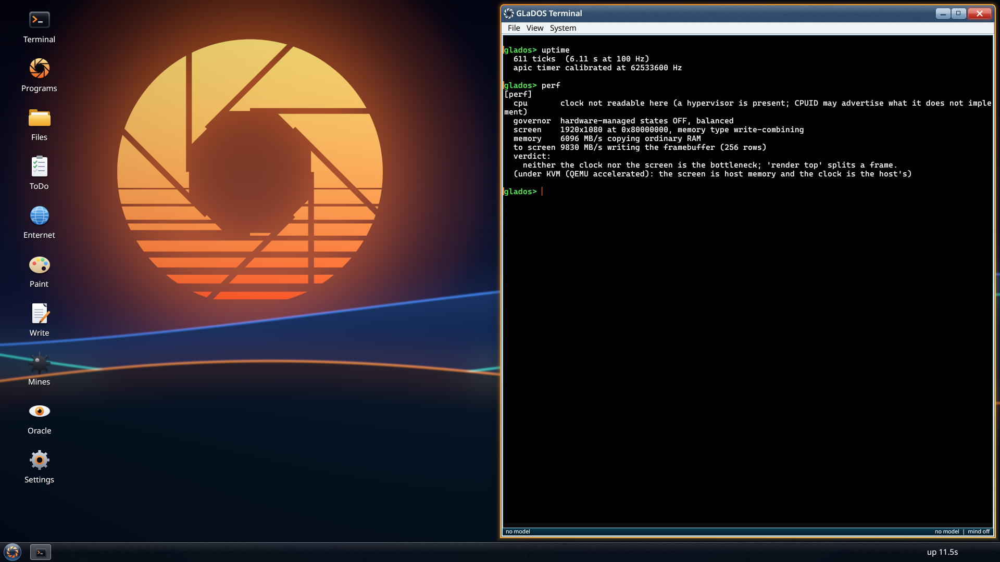
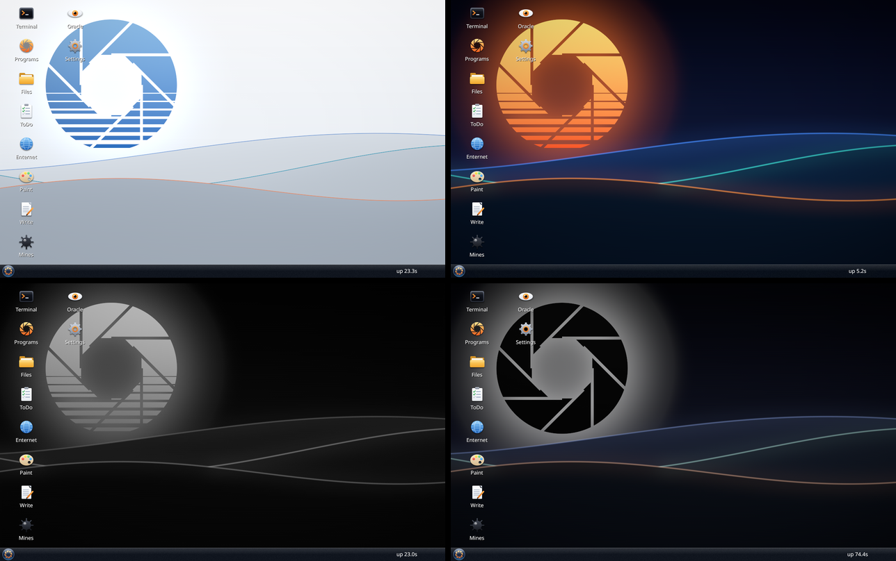
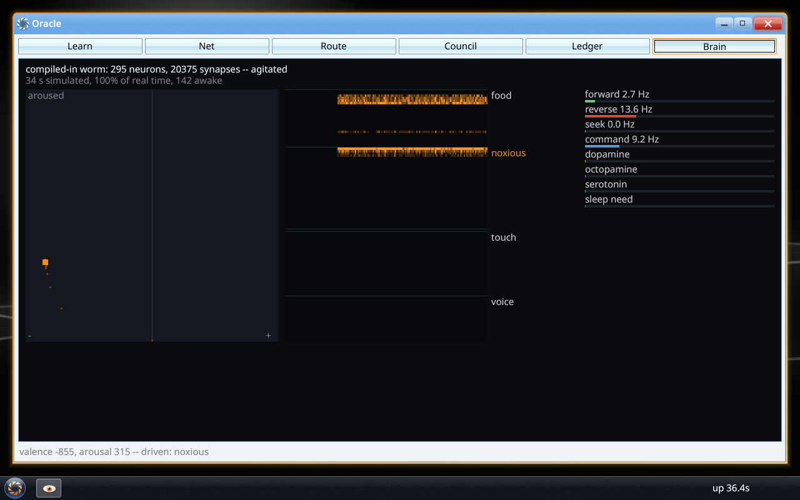
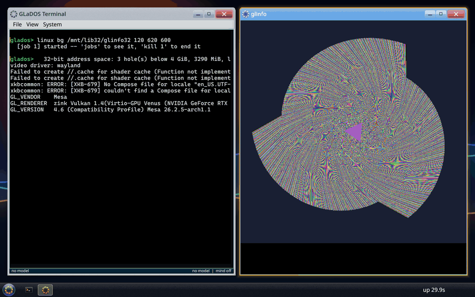
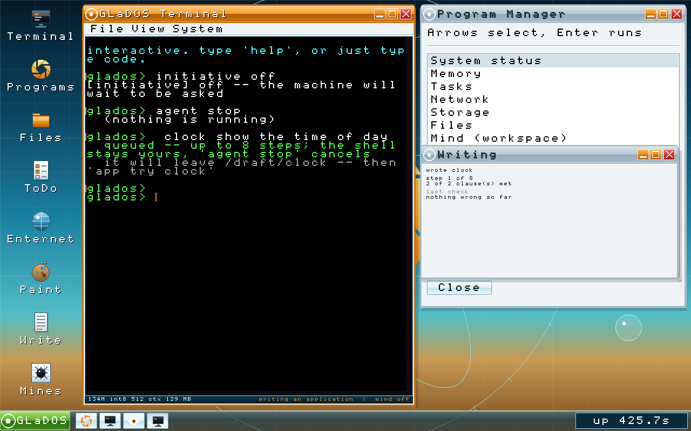
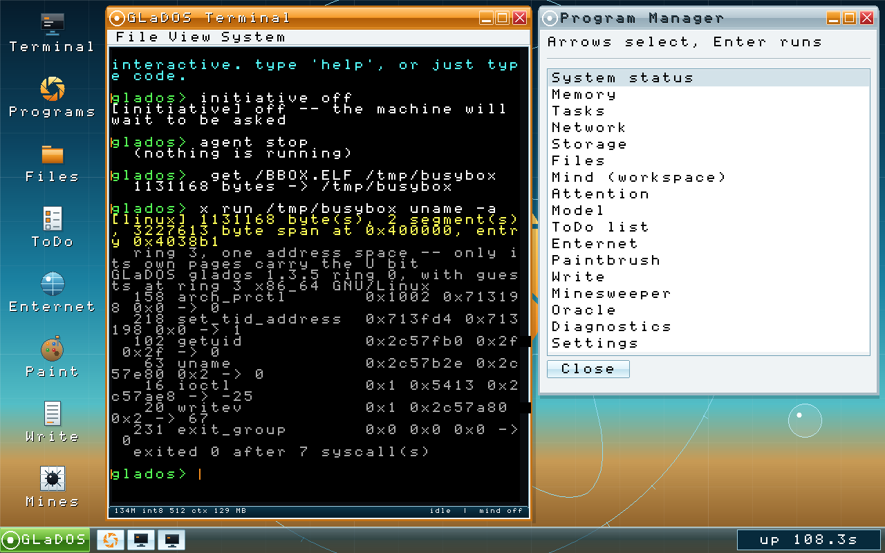
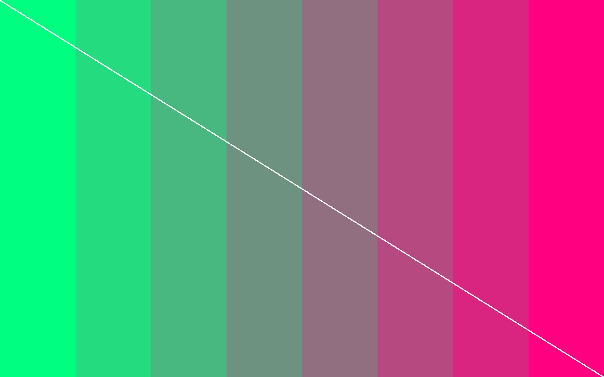
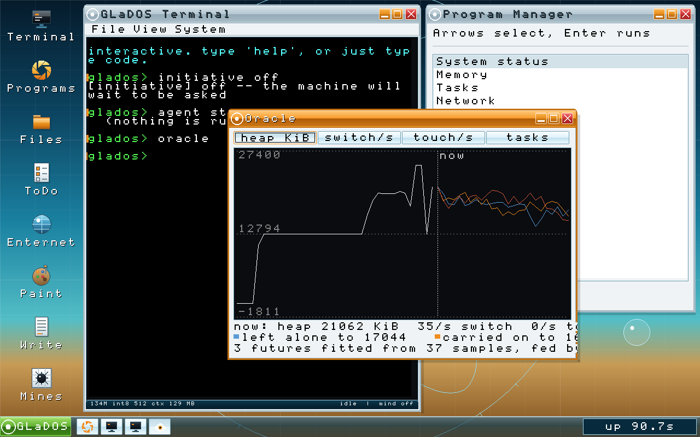

GLaDOS OS screenshots
Taken from the running system under QEMU, through the emulator's monitor, so each one is the framebuffer's exact contents. The first four are from 1.4.3; the rest are older and say which release they are.

perf, which reports the clock, the governor, and how fast memory and the screen can be written.

brain poke pain at the shell does the same, and the wallpaper above answers it.
linux bg starts a 32-bit OpenGL program as a background job, and the shell stays yours. The program is ordinary: unmodified Mesa does Vulkan on the host's RTX 3050 through a render node this kernel serves, Zink puts OpenGL 4.6 on top, and the window it draws in belongs to Skywalker, the Wayland server inside the kernel. Nothing in the kernel knows what Vulkan is. This path runs in a virtual machine with the host's GPU behind it; a native driver for the laptop's own GPU is the next step.
author clock show the time of day queues a run and hands the prompt straight back, which is the point of it: the shell stays yours while it works, and agent stop cancels. The Writing window is the run reporting on itself -- which step of its budget it is on, how many of the clauses it set itself have been met, and the last check verbatim. There is no progress bar, because a step can be a skeleton that lands instantly or a decode that takes seconds, and the loop ends when the checks pass rather than after a known amount of work. It leaves a draft and adopts nothing: app try runs it, app take keeps it. Nothing here calls out to anything. The model that decided to write this is in the same address space as the code drawing the window it is reporting into.
uname -a for itself. Underneath is every syscall it made, with the arguments it passed and what it got back: seven of them, ending in exit_group. The same binary run as sha256sum hashes its own file to the digest the development machine computes over the same bytes, which is the check that settles this path against an implementation nobody here wrote.
video driver: glados, a display of 1280x800 and a surface with a pitch of 5120 bytes. The diagonal is why the picture is shaped like this. Eight flat bars come out looking perfectly correct under a wrong stride, as long as the stride is a multiple of the bar width, and a line from corner to corner cannot. It runs straight.
What you are looking at
There is no graphics library beneath the desktop. UEFI's Graphics Output Protocol hands the kernel a base address, a width, a height and a stride, and everything above those four numbers is this project's: the shapes, the gradients, the glass, the window manager and the compositor. The two typefaces are outlined by fontdue, the one outside crate the kernel admits, and only for fonts.
A frame is a diff of two scenes. The desktop lists what is on screen as layers, each with a fingerprint of exactly what its painter reads, and the layers that changed since the last frame are the damage -- at most sixteen rectangles, repainted and written out. An idle desktop writes about a dozen rows ten times a second, which is the clock. render verify on composes a full reference frame after every incremental one and names the first pixel that disagrees.
None of these were arranged by hand. The desktop is driven over a serial line: a script sends shell commands, and the emulator's monitor is asked for the framebuffer. Anything the pointer can do a keystroke can also do, which is a constraint the testing imposed and the interface kept.